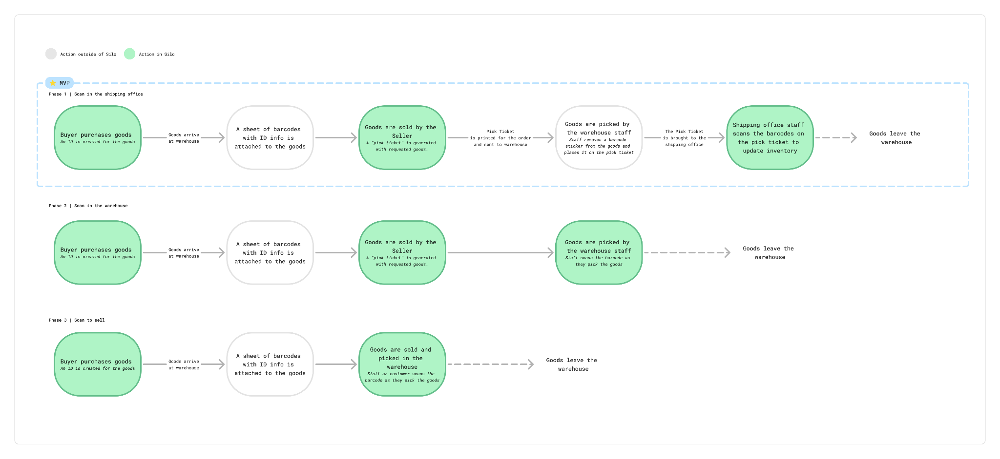
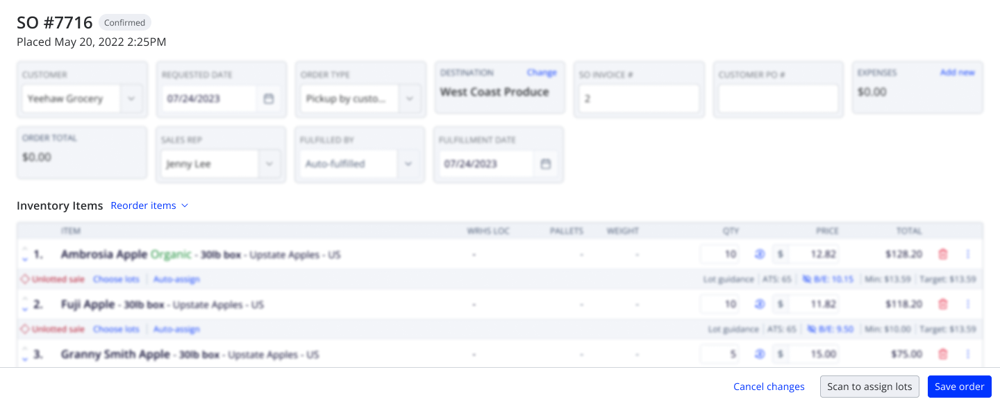
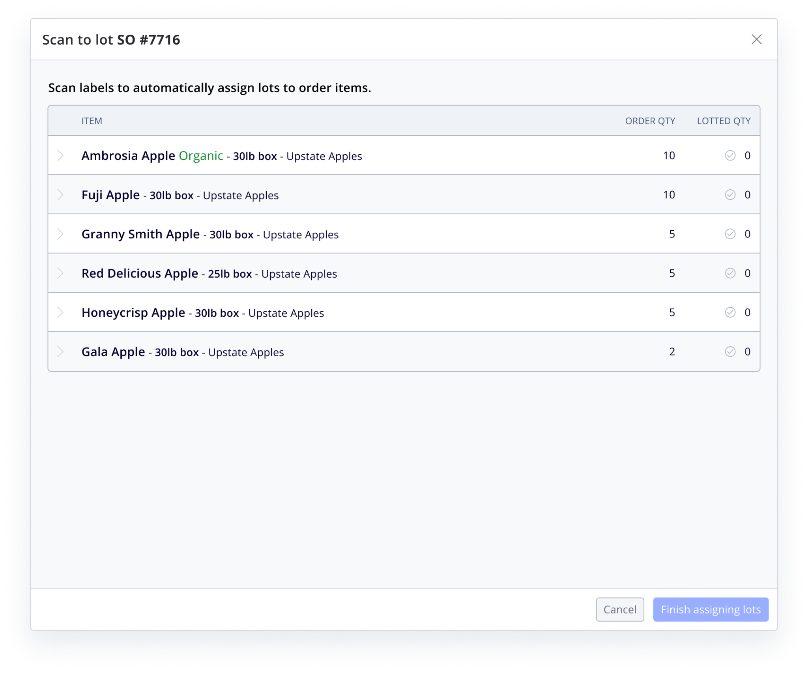
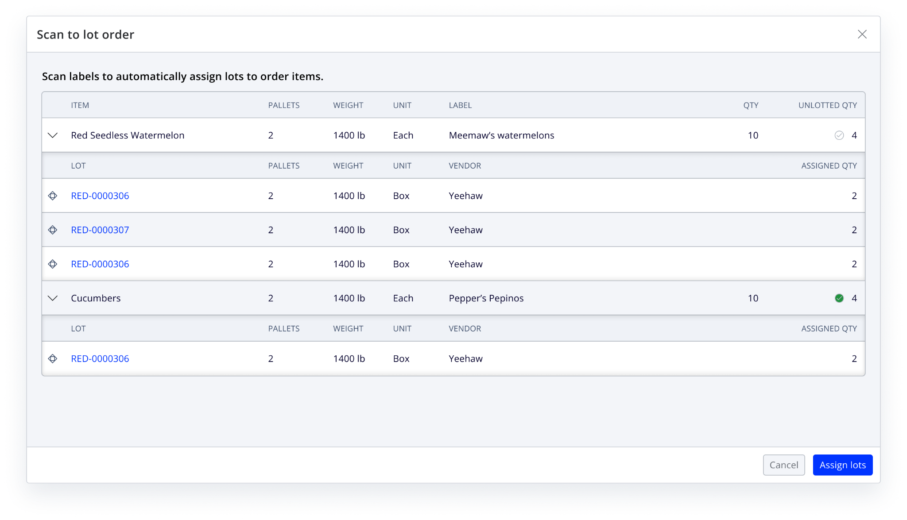

Silo / Product Design, UX, User Research
Scanning inventory
A barcode-scanning workflow that helps produce distributors keep warehouse inventory accurate as goods move out the door.
Product goal
Produce distributors needed a faster, more reliable way to match warehouse inventory with the records kept in the office. The goal was to reduce tracking errors and make it easier to verify inventory while products moved through the warehouse.
Team and scope
I led product design alongside one product manager and two engineers from August 2023 through July 2024.
Research in the warehouse
Scanning was the most requested feature from both existing customers and prospects. To validate the request, the team visited ten distributors in McAllen, Texas and followed their workflows from the shipping office to the warehouse floor.
Paper remained central to the process, and teams did not always trust the system to reflect what was physically loaded onto a truck. Staff needed to verify each product and quantity quickly while the truck waited, then report the change to the shipping office without adding another manual step.
Workflow direction
I mapped the flow across the warehouse and shipping office, then worked with product to define phases for the rollout. The first release focused on scanning in the shipping office, where it could update inventory with less engineering complexity. Future phases could move scanning closer to picking and selling workflows.

Designing the scan flow
Design exploration focused on where scanning begins, how to introduce the workflow in context, how to group product and ID information, and how to make success and error states clear during a time-sensitive task.


Feedback in context
Once a barcode is scanned, the workflow confirms the matched lot and shows the assigned quantity alongside the remaining order items. This keeps staff oriented to the order while providing immediate confirmation that inventory has updated.

Outcome
The scan-to-lot workflow launched to all customers in Q3 2024. Two existing customers adopted it within the first month. The work also renewed sales conversations with distributors in McAllen, an important produce-software market.
“This works for me. Looks simple.”